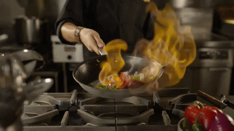

<!DOCTYPE html>
<html lang="en">
<head>
    <meta charset="UTF-8">
    <meta name="viewport" content="width=device-width, initial-scale=1.0">
    <title>Cooking</title>
</head>
<body>
    
</body>
</html>
    <style>
        body{
           font-family: Arial, Helvetica, sans-serif;
       }
   
       .navbar {
           display: flex;
           position: sticky;
           align-items: center;
           justify-content: space-between;
           top:0px;
           background: black;
           background-blend-mode: darken;
           background-size: cover;
           color: white;
           padding: 10px 20px;
       }
   
       .nav-list {
           display: flex;
           list-style: none;
       }
   
       .nav-list li {
           margin-right: 20px;
       }
       .nav-list li:last-child{
           margin-right: 0;
       }
   
       .nav-list li a{
           text-decoration: none ;
           color: white;
           font-size: 18px;
           transition: color 0.3 ease-in-out;
       }
   
       .nav-list li a:hover{
           color: yellow;
       }
   
       .rightNav{
           text-align: right;
       }
   
       .btn{
           background-color: yellow;
           color: black;
           border:  none;
           padding: 8px 12px;
           border-radius: 5px;
           cursor: pointer;
           transition: background-color 0.3 ease-in-out;
       }
   
       .btn:hover{
           background-color: black;
           color: yellow;
       }

       h1{
        text-align: center;
    }
    .center1{
        text-align: center; 
    }
    ul.a{
        list-style: square;
        list-style-position: inside;
    }
    ol.b {
  list-style-type: decimal;
  list-style-position: inside;
}
img{
    height: 250px;
    width: 450px;
    border: 1px black;
   }
   #right{
    float:right;
   }

   /* Refrence: W3 Schools, 2024. Learn to Code. [Online] 
  Available at: https://www.w3schools.com 
  [Accessed September 2024].
  Geeks for Geeks, 2008. Data Structure & Algorithms. [Online] 
  Available at: https://www.geeksforgeeks.org
  [Accessed September 2024].
  Udacity, 2011. Introduction to Javascript. [Online] 
  Available at: https://www.udacity.com/course/intro-to-javascript--cd2073
  [Accessed September 2024].
  Code Academy, 2011. HTML & CSS. [Online] 
  Available at: https://www.codecademy.com/?g_network=g&g_productchannel=&g_adid=528849219280&g_locinterest=&g_keyword=codecademy&g_acctid=243-039-7011&g_adtype=&g_keywordid=kwd-41065460761&g_ifcreative=&g_campaign=account&g_locphysical=9053244&g_adgroupid=70492864474&g_
  [Accessed September 2024].*/

       </style>
       <nav class="navbar">
        <ul class="nav-list">
            <li><a href="HomePage.html">Home page</a> </li>
            <li><a href="Courses.html">Courses</li>
            <li><a href="ContactUs.html">Contact Us</a></li>
            <li><a href="Cart.html">Cart</a></li>
        </ul>
    </nav>

</head>
<body>
    <h1>Cooking</h1>
    
    <P>
        Cooking is the process of preparing food by combining ingredients and applying heat through various methods. It transforms raw materials into flavorful and nutritious dishes, utilizing techniques that enhance taste, texture, and presentation. Cooking is both a science and an art, requiring knowledge of ingredients, techniques, and flavor combinations. It can be a practical skill, a creative outlet, and a means to explore cultural traditions. In conclusion cooking is a vital skill that promotes health, creativity, and cultural appreciation. A cooking class provides participants with the knowledge and hands-on experience to build confidence in the kitchen. Through learning and practice, individuals can enjoy the art of cooking while fostering a lifelong love for preparing and sharing food.

    </P>

    <P>
        <h2>Concepts covered in the cooking class:</h2>
        
        <ol class="b">
        <li>Introduction to Cooking:</li>
        <ul class="a">
            <li>Definition: Preparing food through techniques involving heat and ingredients.</li>
            <li>Purpose: To nourish the body, bring people together, and express creativity.</li>
        </ul>
    </p>
    <p>
        <li>Understanding Ingredients:</li>
        <ul class="a">
            <li>Basic Food Groups: Grains, proteins, vegetables, fruits, and dairy.</li>
            <Li>Seasonings and Flavorings: Herbs, spices, oils, and condiments.</Li>
            <li>Fresh vs. Processed: Benefits of using fresh ingredients over packaged foods.</li>
        </ul>
    </p>
    <p>
        <li>Essential Cooking Techniques:</li>
        <ul class="a">
            <li>Knife Skills: Proper handling, cutting techniques (chopping, dicing, mincing).</li>
            <li>Boiling: Cooking food in water or broth.</li>
            <li>Steaming: Cooking food using steam for better nutrient retention.</li>
            <li>Sautéing: Cooking quickly in a small amount of fat.</li>
            <li>Baking and Roasting: Cooking with dry heat in the oven.</li>
            <li>Grilling and Broiling: Cooking with direct heat for unique flavors.</li>
        </ul>
    </p>
    <p>
        <li>Kitchen Tools and Equipment:</li>
        <ul class="a">
            <li>Essential Utensils: Knives, cutting boards, spatulas, and measuring cups.</li>
            <li>Cookware: Pots, pans, baking sheets, and specialty tools.</li>
            <li>Appliances: Ovens, stovetops, blenders, food processors, and slow cookers.</li>
        </ul>
    </p>
    <P>
        <li>Food Safety and Hygiene:</li>
        <ul class="a">
            <li>Personal Hygiene: Importance of washing hands and using clean utensils.</li>
            <li>Cross-Contamination: Keeping raw and cooked foods separate.</li>
            <li>Proper Food Storage: Understanding refrigeration and expiration dates.</li>
        </ul>
    </P>
    <P>
        <LI>Recipe Reading and Meal Planning:</LI>
        <ul class="a">
            <lI>Understanding Recipes: How to read and interpret ingredients and instructions.</LI>
            <lI>Measuring Ingredients: Using dry and liquid measuring tools accurately.</LI>
            <lI>Meal Planning Basics: Creating balanced meals and shopping for ingredients.</LI>
        </ul>
    </P>
    <P>
        <li>Culinary Skills Development:</li>
        <ul class="a">
            <Li>Seasoning and Balancing Flavors: Techniques to enhance dishes.</Li>
            <Li>Plating and Presentation: Tips for making food visually appealing.</Li>
            <Li>Experimenting with Textures and Techniques: Encouraging creativity in dish creation.</Li>
        </ul>
    </P>
    <P>
        <li>Cultural Exploration:</li>
        <ul class="a">
            <li>Global Cuisines: Introduction to various international dishes and ingredients.</li>
            <li>*Culinary Traditions: Discussing the cultural significance of food and cooking practices.</li>
        </ul>
    </P>
    <p>
        <li>Hands-On Cooking Activities:</li>
        <ul class="a">
            <LI>Simple Recipes: Starting with basic, age-appropriate dishes.</LI>
            <li>Cooking Challenges: Encouraging creativity through themed cooking projects.</li>
            <li>Teamwork in the Kitchen: Working in groups to promote collaboration.</li>
        </ul>
    </p>
    <p>
        <li>Clean-Up and Organization:</li>
        <ul class="a">
            <li>Importance of Cleanliness: Maintaining a tidy workspace.</li>
            <li>Proper Cleaning Techniques: Safely washing utensils and surfaces.</li>
            <li>Storing Leftovers: Best practices for food storage and minimizing waste.</li> 
        </ul>
    </p>
        </ol>
    
</body>
</html>